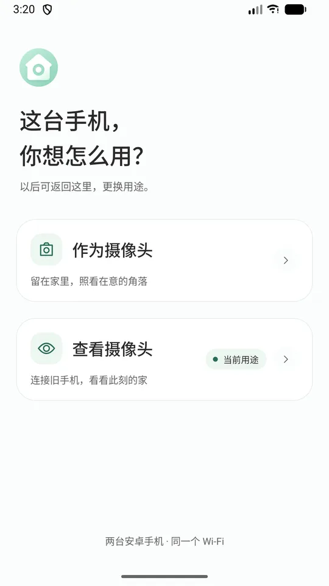
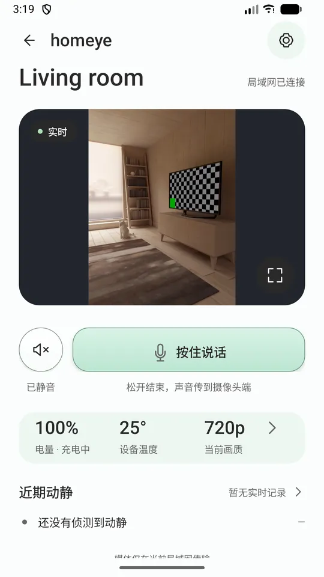
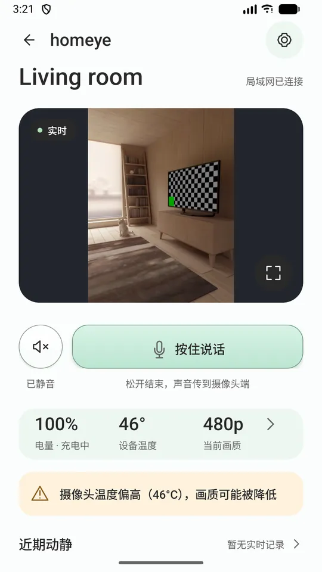
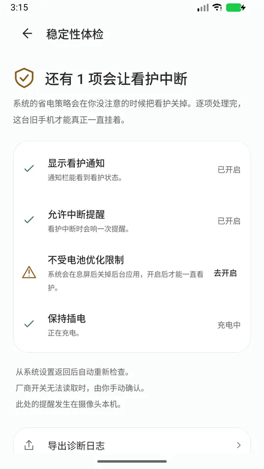
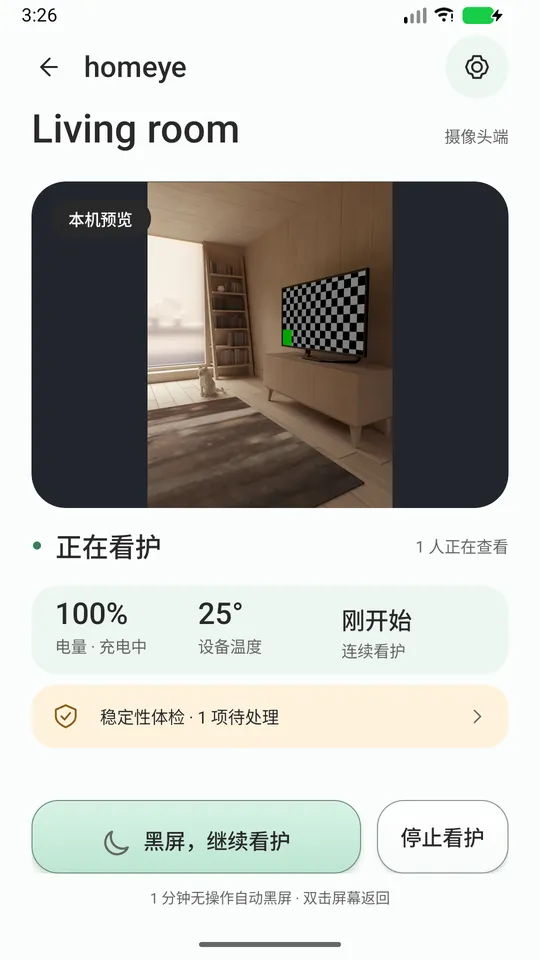

Homeye
com.jerome.homeye · 免费 · Android 7.0+
抽屉里那台旧安卓手机，就是一台家用摄像头。
两台手机，一个 Wi-Fi。实时画面、对讲、动静提醒——不用注册账号，中间没有云，也没有广告。
在 Google Play 下载
下载 6.7 MB · 十五种语言 · 无内购
抽屉里那台旧安卓手机，插上电就能当摄像头用。不用买硬件，不用注册账号。
它不会骗你
掉线你会知道
掉线的时候你会知道——不用你自己盯着画面发现它不动了。
降画质会说明原因
手机发热或电量低而自动降画质时，会告诉你为什么，不偷偷变糊。
带你逐条开系统开关
「稳定性体检」把系统里那些会悄悄杀掉后台的开关列成一张清单，逐条带你去开。
日志只去你发的地方
出问题可以导出诊断日志发给开发者——日志不会自动上传到任何地方。
怎么用
- 两台手机都装 Homeye，连同一个 Wi-Fi。
- 旧手机选「作为摄像头」，插上电、摆好角度。
- 常用手机选「作为看护端」，扫一下旧手机屏幕上的二维码。
配对一次，以后打开就能看。
界面





能做什么
- 实时画面与声音，四档清晰度自动跟着温度和电量调整
- 按住说话（对讲）
- 移动侦测，有动静时在看护端弹提示并带一张缩略图
- 摄像头端可熄屏继续工作，省电又不打扰
- 摄像头端电量低、发热时提醒你去插电
- 看护端可以调远近（变焦，取决于机器支持到什么程度）
- 十五种语言，跟随系统
这一版做不到的，先说清楚
只能在同一个 Wi-Fi 下用 人在外面、手机走的是移动网络时，这一版连不上—— 远程访问要架服务器，正在评估，不在这一版里。
不能保证「永不掉线」 Android 对后台运行有硬性限制，谁都做不到； 我们能做到的是它一旦停了，你会知道。
不是医疗设备，不能替代成年人的看护。
隐私（每一句你都能自己验证）
- 画面和声音只在你当前连的局域网里传，不经过任何我们的服务器。
- 不需要注册账号，我们不收集你的邮箱或手机号。
- 没有广告，也没有分析 SDK。
- 我们不提供媒体服务器，也不提供云录像。
- 设备身份是手机硬件密钥库里生成的一对密钥，私钥不会离开那台手机。
- 为了让看护端找得到它，摄像头端会在你的 Wi-Fi 里广播自己的名字和公钥指纹——只有这两样。
需要什么
两台安卓手机（Android 7.0 及以上），同一个 Wi-Fi。当摄像头那台建议插电。